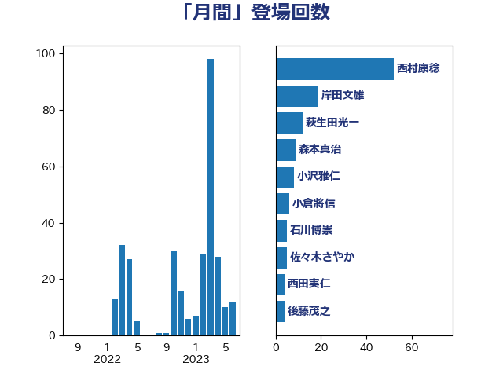

単語「月間」

| 西村康稔 | 自由民主党 | 52 回 |
| 岸田文雄 | 自由民主党 | 19 回 |
| 萩生田光一 | 自由民主党 | 12 回 |
| 森本真治 | 立憲民主党 | 9 回 |
| 小沢雅仁 | 立憲民主党 | 8 回 |
| 小倉將信 | 自由民主党 | 6 回 |
| 石川博崇 | 公明党 | 5 回 |
| 佐々木さやか | 公明党 | 5 回 |
| 西田実仁 | 公明党 | 4 回 |
| 後藤茂之 | 自由民主党 | 4 回 |
| 川田龍平 | 立憲民主党 | 4 回 |
| 階猛 | 立憲民主党 | 3 回 |
| 長峯誠 | 自由民主党 | 3 回 |
| 野田聖子 | 自由民主党 | 3 回 |
| 石井正弘 | 自由民主党 | 3 回 |
| 山井和則 | 立憲民主党 | 3 回 |
| 加藤勝信 | 自由民主党 | 3 回 |
| 中野洋昌 | 公明党 | 3 回 |
| 音喜多駿 | 日本維新の会 | 2 回 |
| 鈴木貴子 | 自由民主党 | 2 回 |
| 野村哲郎 | 自由民主党 | 2 回 |
| 近藤和也 | 立憲民主党 | 2 回 |
| 田村まみ | 国民民主党 | 2 回 |
| 河西宏一 | 公明党 | 2 回 |
| 梅村みずほ | 日本維新の会 | 2 回 |
| 村田享子 | 立憲民主党 | 2 回 |
| 大島敦 | 立憲民主党 | 2 回 |
| 吉田とも代 | 日本維新の会 | 2 回 |
| 井坂信彦 | 立憲民主党 | 2 回 |
| 齋藤健 | 自由民主党 | 1 回 |
| 高木陽介 | 公明党 | 1 回 |
| 遠藤良太 | 日本維新の会 | 1 回 |
| 若松謙維 | 公明党 | 1 回 |
| 美延映夫 | 日本維新の会 | 1 回 |
| 米山隆一 | 立憲民主党 | 1 回 |
| 笠井亮 | 日本共産党 | 1 回 |
| 福島伸享 | 無所属 | 1 回 |
| 田村智子 | 日本共産党 | 1 回 |
| 津島淳 | 自由民主党 | 1 回 |
| 泉健太 | 立憲民主党 | 1 回 |
| 沢田良 | 日本維新の会 | 1 回 |
| 水岡俊一 | 立憲民主党 | 1 回 |
| 柚木道義 | 立憲民主党 | 1 回 |
| 松野博一 | 自由民主党 | 1 回 |
| 杉田水脈 | 自由民主党 | 1 回 |
| 庄子賢一 | 公明党 | 1 回 |
| 岩田和親 | 自由民主党 | 1 回 |
| 山崎正恭 | 公明党 | 1 回 |
| 山口那津男 | 公明党 | 1 回 |
| 小沼巧 | 立憲民主党 | 1 回 |
| 宮本岳志 | 日本共産党 | 1 回 |
| 大野泰正 | 自由民主党 | 1 回 |
| 塩村あやか | 立憲民主党 | 1 回 |
| 塩崎彰久 | 自由民主党 | 1 回 |
| 堤かなめ | 立憲民主党 | 1 回 |
| 吉良よし子 | 日本共産党 | 1 回 |
| 北側一雄 | 公明党 | 1 回 |
| 勝部賢志 | 立憲民主党 | 1 回 |
| 前原誠司 | 国民民主党 | 1 回 |
| 倉林明子 | 日本共産党 | 1 回 |
| 仁木博文 | 無所属 | 1 回 |
| 三木圭恵 | 日本維新の会 | 1 回 |